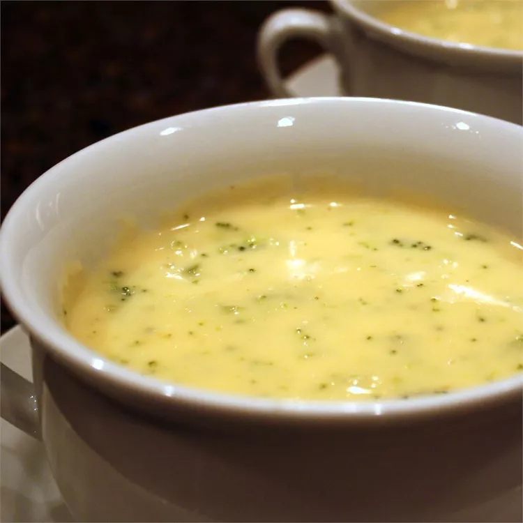

Ingredients
- ½ cup butter
- 1 onion, chopped
- 1 (16 ounce) package frozen chopped broccoli
- 4 (14.5 ounce) cans chicken broth
- 1 (1 pound) loaf processed cheese food, cubed
- 2 cups milk
- 1 tablespoon garlic powder
- ⅔ cup cornstarch
- 1 cup water
Description
This broccoli cheese soup is very flavorful. It's great for serving at luncheons or special gatherings with a quiche. To make it a little fancier, add 1 cup sliced mushrooms and 1 cup white wine with the onions.
Recipe Credits:
Directions
Step 1:
Melt butter in a stockpot over medium heat. Add onion and cook, stirring occasionally, until softened. Stir in broccoli. Add broth and simmer until broccoli is tender, 10 to 15 minutes.
Step 2:
Reduce heat; add cheese cubes and stir until melted. Stir in milk and garlic powder.
Step 3:
Stir cornstarch and water together in a small bowl until smooth. Stir into soup; cook, stirring frequently, until thick.